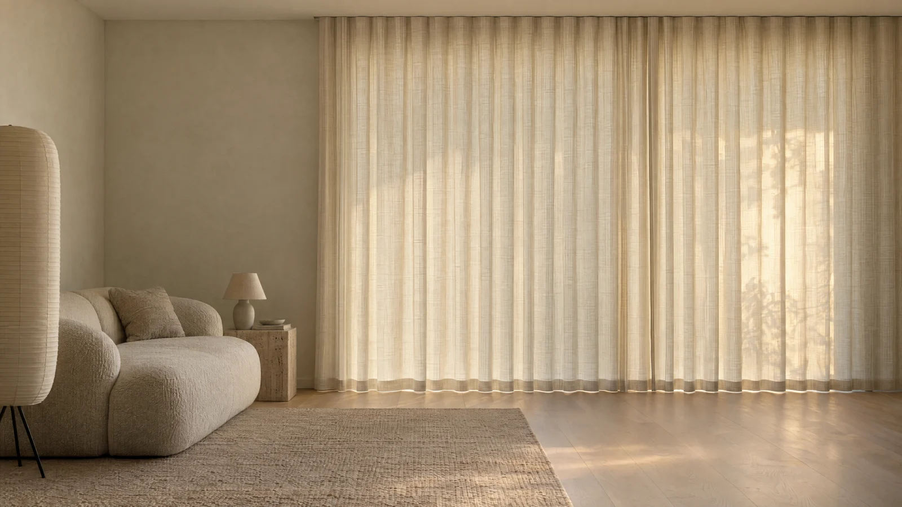

Choose how much morning comes in. Then see how it holds the lamplight.
Four fabrics, cut to your window. Draw one across and watch the room change.
After dark the weave shows: its slub, its sheen, its true colour.
08:40
38%
Light filtering